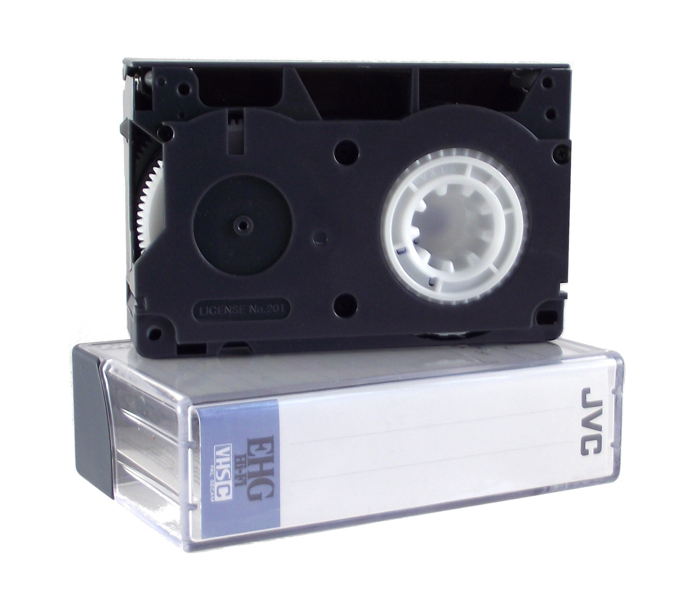

The VHS tape was a popular way during the late 1900s to watch and record videos. This was way before DVDs and streaming became popular. I chose it because it shows how much the way people watch and keep media has changed.
You can learn more about VHS tapes at the Museum of Obsolete Media .